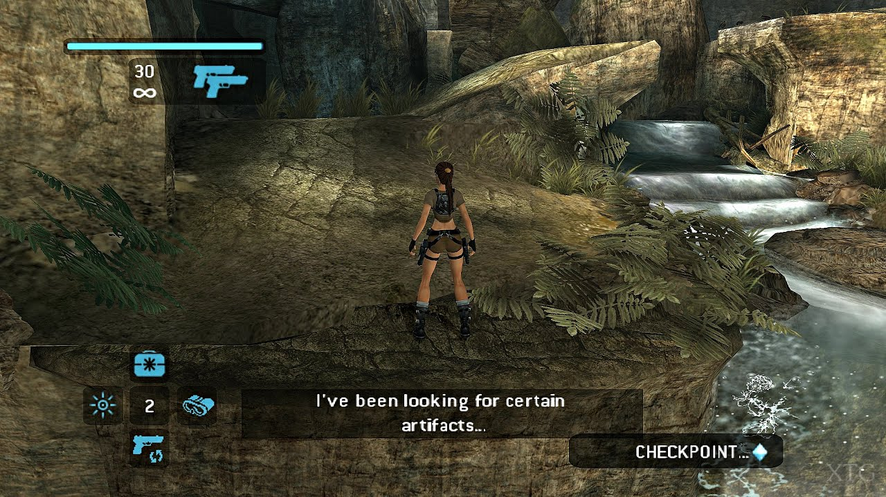
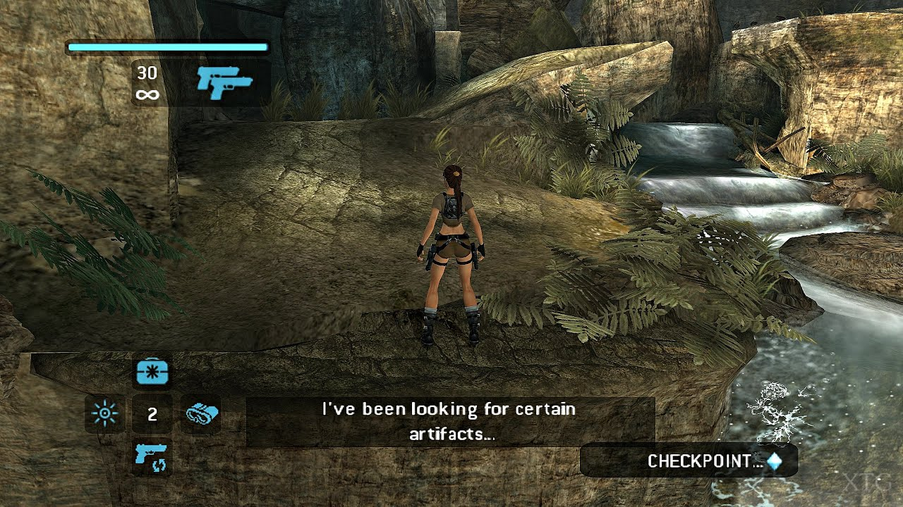

Od 2000. do 2010. gaming je ušao u potpuno novu eru sa moćnijim konzolama i grafikom visoke rezolucije. PlayStation 2, Xbox i Nintendo Wii dominirali su tržištem, uvodeći nove načine igranja i inovativne kontrole. Ovaj period je obeležen prelaskom sa 2D na 3D svetove, sve realističnijom fizikom, naprednom AI logikom i kompleksnijim pričama koje su zadržavale igrače satima.
Igre poput Halo, GTA: San Andreas i The Sims postale su globalni hitovi, privlačeći igrače različitih uzrasta. Online multiplayer i internet gaming počeli su da oblikuju gejming zajednice širom sveta, omogućavajući prijateljima i strancima da se takmiče i sarađuju bez obzira na udaljenost.
Portabilne konzole poput Nintendo DS i PSP omogućile su igračima da uživaju u igrama u pokretu, dok su motion control igre na Wii donosile inovativnu interakciju sa igrom, menjajući način na koji se igre igraju i doživljavaju.
Tokom ove dekade, reboot-ovi poznatih serijala i remasteri klasika, kao što su Tomb Raider: Legend, Prince of Persia: Sands of Time i Resident Evil 4, doneli su svežinu i modernizaciju popularnih franšiza. Takođe, Assassin’s Creed uvodi složene priče, istorijske settinge i stealth gameplay koji su postavili standard za buduće igre.


 
